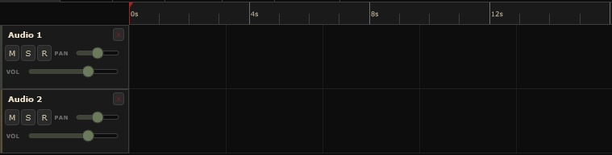

Capturas del programa
Mirá cómo se ve
Mirá cómo se ve
por dentro

Timeline y editor de pistasOrganizá tus pistas de audio y MIDI con un vistazo claro de todo el proyecto.

Consola de mezcla integradaEQ, compresión y sends por canal, con medidores en tiempo real.

Editor de piano roll y MIDIComponé con precisión: velocity, cuantización y automatizaciones.

Plugins VST / LV2Cargá tu cadena de efectos favorita en cada canal.

Biblioteca de samplesArrastrá y soltá samples directamente a tus pistas.
Hacé clic en cualquier captura para verla en grande.